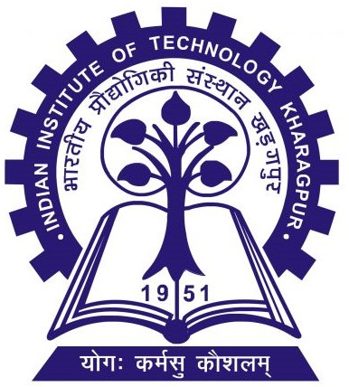

Bachelor of Science in Exploration Geophysics (4-Year), Dept. of Geology and Geophysics
Indian Institute of Technology, Kharagpur
📧 dhruvvarshney2906@gmail.com | dhruvvarshney@kgpian.iitkgp.ac.in
📞 +91 8597986847

I am Dhruv Varshney, a motivated second-year undergraduate student pursuing a B.S. in Exploration Geophysics at IIT Kharagpur, with a strong passion for artificial intelligence, machine learning, and data analysis. I am actively developing core skills in Python programming (Pandas, PyTorch, TensorFlow, etc.), building scalable data pipelines, preprocessing intricate datasets, and implementing statistical ideas through hands-on projects.
My areas of interest include:
I am cultivating these skills through directed coursework and experiential experimentation, aiming to solve real-world problems using methodical analytics pipelines. I am seeking a summer internship to apply AI concepts and enhance my technical expertise professionally.
| # | Year | Degree/Exam | Institution | Board | CGPA/Percentage |
|---|---|---|---|---|---|
| 1 | 2023 - Present | B.S. Exploration Geophysics | IIT Kharagpur | - | 8.29/10 |
| 2 | 2023 | Senior Secondary Examination | Kendriya Vidyalaya IIT Kharagpur | CBSE New Delhi | 91.2% |
| 3 | 2021 | Secondary | Kendriya Vidyalaya IIT Kharagpur | CBSE New Delhi | 97.6% |
Supervisor: Prof. Pawan Goyal, CSE Department, IIT Kharagpur.
OPEN-IIT Competition on Data-Analytics